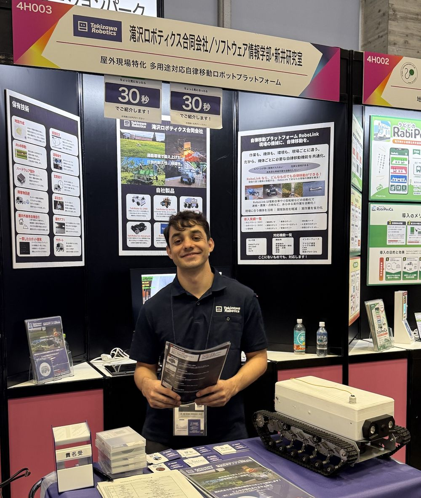

Master's Student, Software & Information Science (Social Systems Design) Iwate Prefectural University, Japan
I build decision support systems that turn data about people into action. My Master's research created ISSDSS, a web-based decision support system that tracks the satisfaction of international students in Japan over time and helps staff act on what it shows. I presented it at ICISS 2026 at the University of Cambridge, and I will present it at APIEMS 2026 in Busan. I also build robots: for the past year I have been a part-time engineer at Takizawa Robotics, where I built a crawler inspection robot on the ROS platform, operated through a web interface over an optical-fiber link, and demonstrated it at CEATEC 2026.
I am open to PhD positions in information systems and decision support, explainable and causal AI, and physical AI and robotics.
Information Systems & Decision Support SystemsSystems that turn survey and sensor data into monitoring, diagnosis and evidence-based action for institutions.
AI, Explainable AI & Causal AIMoving from correlations to explanations and causes that decision-makers can trust.
Physical AI, Robotics & Autonomous SystemsRobots that sense and act in the real world, from field inspection robots to autonomous navigation with LiDAR and ROS 2.
Publications & Presentations
Decision Support System for International Student Satisfaction Management: A Longitudinal Case Study in Iwate Prefecture
S. A. E. Hossini, T. Uetake. 26th Asia Pacific Industrial Engineering and Management Systems Conference (APIEMS 2026), Busan, Korea, 29 Nov – 2 Dec 2026. Accepted for oral presentation (planned).
Exploring Satisfaction Factors of International Students in Japan: A Web-Based Decision Support System, a Longitudinal Case Study in Iwate Prefecture
S. A. E. Hossini, T. Uetake. 9th International Conference on Information Science and Systems (ICISS 2026), University of Cambridge, UK, 27–29 Aug 2026. Presenter.
A Data-Driven Analysis of International Student Satisfaction through an Information System: A Case Study in Regional Japan
S. A. E. Hossini, T. Uetake. 33rd National Conference of the Japan Information-Culturology Society, 2025. Presenter.
The Role of Corporate Social Responsibility in Hospitals: A Study of Afghanistan's Public and Private Hospitals
S. M. Z. Abdali, A. R. Sedeqi, S. A. E. Hossini, M. H. Qiami. The Journal of Social Science, 7(13), 2023. doi:10.30520/tjsosci.1199829
Talks & exhibitions
Crawler robot for remote inspection of confined spaces: exhibition and live demonstration CEATEC 2026, Makuhari Messe, Chiba, Japan. With Takizawa Robotics.
Muscle fatigue monitoring with a wearable EMG sensor: a project-based learning team project Agile PBL Festival (Agile PBL 祭り), Tokyo, November 2025. Speaker and team leader, representing Iwate Prefectural University after our team won first place in the university's PBL competition. [Speaker page]
Research & Projects
Master's research
ISSDSS: a decision support system for international student satisfaction
Universities and language schools outside Tokyo and Osaka support international students with small teams, and usually learn about problems only when students complain. My thesis, Decision Support System for International Student Satisfaction Management: A Longitudinal Case Study in Iwate Prefecture, measures what drives satisfaction and builds a system that lets staff act on it.
Longitudinal survey research over two rounds in 2025–2026 (a pilot, then the full survey in June 2026) at Morioka Japanese Language School and Iwate Prefectural University, measuring academic satisfaction (teaching, materials, feedback, support) and daily-life satisfaction (housing, finances, language, community, health), analyzed with regression, t-tests and reliability analysis in Python and SPSS.
A closed feedback loop: dashboards show satisfaction by group and factor; regression and AI clustering of free-text comments reveal the main drivers and pain points; staff log interventions in an Actions tab; the next survey round measures their effect; and PDF reports share the results.
Built the system end to end: database design, a multilingual web interface for students and staff, charts, and an AI layer that groups open comments into topics.
Crawler robot for remote inspection of confined spaces, exhibited at CEATEC 2026
C++ · Arduino · Python · ROS 2 · LiDAR · Raspberry Pi · 2026
A compact tracked robot that goes where people cannot: inside tunnels, pipes, underground facilities and other dark, narrow spaces. A front camera with LED lighting streams live video back to a PC over up to 500 m of optical fiber, which keeps the link stable in places where wireless signals fail. An operator drives the robot remotely from the PC while watching the video. I wrote the robot's software.

At the Takizawa Robotics / Iwate Prefectural University booth (4H003), CEATEC 2026, Makuhari Messe. The crawler robot is on the right.
Version 1, research prototype (Apr–Jul 2026): designed the wiring and software. I wrote the Python operator interface on the PC and the C++ motor-control code on the Arduino; the PC sends driving commands to the robot over the optical fiber.
Version 2, full deployment delivered to a customer (from Jul 2026): rebuilt the robot for real-world use with LiDAR and a ROS 2 system on Raspberry Pi, operated through a web interface over the optical-fiber link. I am also designing the winch that winds and unwinds the fiber cable.
Gave live demonstrations to industry visitors at CEATEC 2026, where Takizawa Robotics exhibited jointly with the Faculty of Software and Information Science at Iwate Prefectural University.
roboticsremote inspectionROS 2LiDARC++Python
Muscle fatigue detection on Android with a wearable EMG sensor
Kotlin · Jetpack Compose · Bluetooth · BITalino · 2025–2026
An Android app that connects to a BITalino biosignal board, streams surface EMG, and monitors muscle condition and fatigue over time. I led the project-based learning team that built it; we won first place in the university's PBL competition and presented it at the Agile PBL Festival in Tokyo in November 2025.
Wrote a Bluetooth reader that speaks the BITalino protocol directly: sets the sampling rate (100 Hz), starts acquisition on channel A1, and decodes 3-byte frames with CRC checking and resynchronisation on errors.
Extracts signal features (mean, RMS, mean absolute value) from each recording and maps them to a per-muscle score and condition label.
Interactive body map, live waveform view, measurement history and a weekly summary screen, plus a mock EMG source for testing without hardware.
Part-Time Engineer, Takizawa RoboticsTwo versions of a crawler robot for remote inspection of tunnels and pipes. Version 1 (Apr–Jul 2026), a research prototype: wiring, a Python operator interface on the PC and C++ motor control on Arduino, linked by optical fiber. Version 2 (from Jul 2026), delivered to a customer: LiDAR and ROS 2 on Raspberry Pi, operated through a web interface over the fiber link, plus a winch for the fiber cable. Demonstrated at CEATEC 2026.
Dec 2025
IT Intern, Avinton JapanSupported system development and implementation, testing and documentation within a Japanese corporate IT workflow.
Jan 2022 – Aug 2023
Instructor and Research Assistant, Sultan Mahmud Ghaznavi Institute of Higher Education, AfghanistanTaught Management Information Systems and supervised student coursework. Researched corporate social responsibility in hospitals, leading to a peer-reviewed journal article.
Education
Apr 2025 – Mar 2027 (exp.)
Master of Software & Information Science (Social Systems Design)Iwate Prefectural University, Japan · Supervisor: Prof. Toshifumi Uetake
Oct 2023 – Mar 2025
Japanese Language ProgramMorioka Information Business & Design College, Japan
Mar 2017 – Dec 2021
Bachelor of Management Information SystemsFaculty of Economics, Kabul University, Afghanistan
Awards & Scholarships
2026Rotary Yoneyama Memorial Scholarship (host club: Mizusawa Rotary Club)
2025Iwate Prefectural University Scholarship
2025First place (Best Idea and Best Group Work), university PBL competition, as team leader of the muscle fatigue monitoring app; selected to represent the university at the Agile PBL Festival, Tokyo